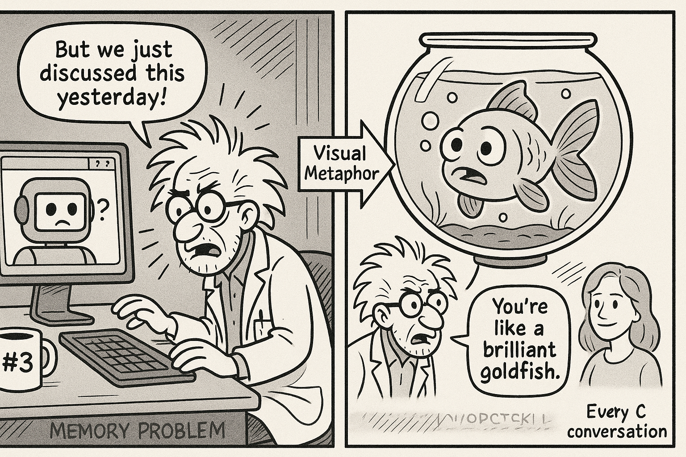

Chapter illustration
Chapter 1: The Goldfish Theory
The coffee had gone cold again.
Mr. Codenstein stared at the mug in his hand—mug number four of the evening—and tried to remember when he'd poured it. An hour ago? Two? Time had become meaningless somewhere around 11 PM, lost in the haze of code and cursor blinking and the slowly dawning horror of what he'd been trying to accomplish.
He was trying to have a conversation with a machine that couldn't remember its own name.
"Okay," he muttered to the screen, setting the mug down with more force than necessary. "Let's try this again."
The GitHub Copilot Chat window stared back at him, pristine and empty. Their previous conversation—two hours of detailed discussion about JWT authentication, token refresh strategies, and security best practices—had vanished into the digital void the moment he'd closed VS Code for dinner.
He typed: "How do we implement token refresh for the authentication system we discussed?"
The response appeared instantly: "I don't have context about previous discussions. Could you provide more details about your authentication system?"
Mr. Codenstein's eye twitched.
"We literally spent two hours on this," he told the screen. "Two. Hours. You suggested PyJWT. You recommended Redis for token storage. You even caught that security flaw in my expiration logic."
"I'd be happy to help with authentication!" Copilot responded cheerfully. "Could you share your current implementation?"
The cursor blinked. The coffee grew colder. Somewhere in his mind, G appeared—leaning against the doorframe with that look.
"Having fun?" she asked.
"Not now, G."
"The computer can't hear me, you know. I'm a figment of your overstimulated imagination."
"You're also right most of the time, which is annoying." He opened his git history.
Seven commits from today, all with messages that read like a descent into madness: - implement JWT auth (2:15 PM) - add token refresh logic (3:47 PM) - fix security issue copilot found (4:23 PM) - update auth tests (5:01 PM) - forgot to commit earlier changes (5:02 PM) - no really this is the auth fix (6:18 PM) - why does git hate me (6:19 PM)
Each commit represented a conversation with Copilot. Each conversation had been brilliant, insightful, exactly what he'd needed. And each conversation had evaporated the moment it ended, leaving him to reconstruct context from git messages that sounded like they'd been written by someone having a breakdown.
Which, fair. He was having a breakdown.
The whiteboard behind him mocked him with its neat architecture diagrams. Tier 1: Working Memory. He'd drawn it three days ago with such confidence. A simple SQLite database. Track the last 20 conversations. Let Copilot remember what they'd discussed. How hard could it be?
Turns out? Pretty hard when the thing you're trying to give memory to can't remember you're trying to give it memory.
He pushed back from his desk, the chair wheels squeaking in protest. The basement laboratory felt different at midnight—less "cognitive architecture breakthrough" and more "scene from a cautionary tale about obsessive engineers."
Coffee mug seventeen sat on top of a stack of papers titled "Conversation Context Persistence Strategies." Mug sixteen had formed a ring stain on a diagram labeled "Entity Relationship Tracking." The others were scattered like archaeological layers, each marking a different failed approach to the same problem.
How do you teach memory to something that forgets you're teaching it?
G's vision appeared again, more solid this time—his brain's way of forcing him to process the problem. "What if you're thinking about this wrong?"
"I'm not thinking about it wrong."
"You're trying to give Copilot memory from inside Copilot. That's like trying to remember something while you're forgetting it."
He stopped. She had a point. Well, he had a point, manifesting through an imaginary girlfriend, but still.
"You need external memory," G continued, pacing around the whiteboard in that way imaginary people do when making points. "Something that persists when Copilot doesn't. A notebook. A diary. A—"
"Database," he finished. "A database that lives outside the conversation context. That survives session restarts. That tracks everything independent of whether Copilot remembers it."
"There you go."
"You're just my subconscious, you know."
"Your subconscious with excellent ideas." She smiled—or seemed to, in that way visions smile. "Now go implement it before you forget this breakthrough."
"I should write it down."
"Ironic, given what we're discussing."
He grabbed a notebook—actual paper, because sometimes analog beats digital—and started sketching. External memory store. Conversation tracking. Entity extraction. Relationship mapping. The architecture took shape on paper faster than it ever had in his head.
Tier 1: Working Memory. But not IN working memory. ABOUT working memory. Stored persistently. Queried automatically. Fed back into context.
"It's like giving Copilot a journal," he said to the empty basement.
"Or like having an imaginary girlfriend who reminds you of things," G's vision said wryly.
"You're really leaning into the meta thing."
"You're really leaning into talking to yourself at midnight."
Fair point.
He opened a new file: tier1workingmemory.py
The cursor blinked expectantly.
"Okay, Copilot," he said to the screen. "Let's teach you how to remember."
---
Three days later, Mr. Codenstein had a theory.
"Copilot is a goldfish," he announced to the empty basement.
G's apparition materialized beside the whiteboard, because of course she did. "Really? We're doing fish analogies now?"
"Hear me out." He grabbed a marker. "THE GOLDFISH THEORY" appeared on the whiteboard in large letters, surrounded by increasingly frantic arrows.
"I'm all ears. Which is weird since I don't technically exist."
"Goldfish, despite popular belief, actually have decent memory. They can remember things for months. But they have terrible context switching—show them something new, and they forget they were in the middle of something else."
G's vision crossed her arms. "Sound familiar?"
"Exactly!" He'd spent the last seventy-two hours documenting every interaction with Copilot. Not the code—the meta-patterns. How it responded. What it remembered within a session. What it forgot between sessions. How context degraded over time even within the same conversation.
The results were sobering.
Within a single session: Copilot could track maybe 5-10 exchanges. After that, earlier context started dropping off. Like a conversation buffer that was first-in, first-out.
Between sessions: Complete amnesia. Every new chat was a fresh start, tabula rasa, blank slate.
Within a long session: It would sometimes forget its own suggestions from twenty messages ago and contradict itself.
"You're not broken," he told the screen. "You're just... architecturally limited."
"So your solution is to build an external memory system," G said, studying his notes. "Make Copilot's brain bigger by giving it a notebook it can't lose."
"More or less. Tier 1: Working Memory." He pulled up his design docs. "But I've been thinking about it wrong. It's not a cache—temporary holding. It needs to be queryable. Searchable. It needs to know not just WHAT we discussed, but WHEN, WHY, and HOW IT CONNECTS to other conversations."
"That's actually clever."
"Thank you, imaginary validation."
"Don't push it." She peered at his screen. "So when do you start building?"
"I started three days ago. Been too busy documenting the problem to solve it."
"Classic developer move. Analyze instead of implement."
"You should sleep," G suggested.
"After I finish this one thing—"
"Mr. Codenstein." Her voice took on that particular quality that made him look up despite knowing she was imaginary. "Sleep. You can't code a memory system if you can't remember what you're coding."
She had a point. Well, he had a point. Well, his exhausted brain was making a point through a narrative device it had invented to keep him sane.
"Fine. Tomorrow I start building Tier 1."
"Tonight you clean the mold mugs."
He looked at the coffee mug timeline. Mug seventeen had definitely achieved sentience and was plotting revolution.
"Tomorrow."
"Now."
"You're very insistent for someone who doesn't exist."
"I'm your conscience manifesting through sleep deprivation. Of course I'm insistent."
He cleaned three mugs—a compromise between rebellion and sanity. Then dragged himself upstairs, leaving the basement laboratory in its chaotic glory.
Tomorrow, he'd teach a goldfish to remember.
Tonight, he'd remember what sleep felt like.
---
💾 What You're Learning:
This chapter introduces Tier 1 (Working Memory) - CORTEX's 70-conversation FIFO queue that ensures context persistence across sessions.
Learn about Working Memory →